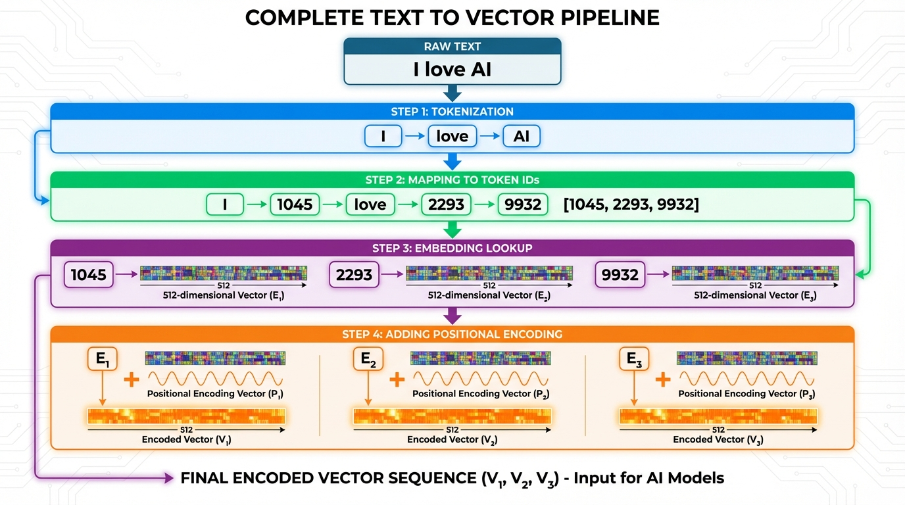

🏠 首頁
/
🔬 技術專題: Tokenizer & Embedding
🔤 從文字到向量:Tokenizer 與 Embedding 完全解析
🎯 核心問題
Q: 如何將「我愛 AI」轉換成 512 維向量？
A: 需要兩個步驟！
- Tokenization: 文字 → Token IDs (整數)
- Embedding: Token IDs → 高維向量 (512/12288 維)
⚠️ 關鍵:Tokenizer ≠ Embedding！這是兩個完全不同的步驟！
📊 完整流程圖

🔄 從文字到向量的完整轉換流程
步驟 1 (藍):Tokenization → 步驟 2 (綠):Token IDs
步驟 3 (紫):Embedding Lookup → 步驟 4 (橙):Positional Encoding
最終:每個 token 都變成 512 維向量！
原始文字: "I love AI"
↓
【步驟 1: Tokenization】
分詞器將文字切成 tokens
↓
Tokens: ["I", "love", "AI"]
↓
查詢詞彙表 (Vocabulary)
↓
Token IDs: [1045, 2293, 9932] ← 這只是整數！
↓
【步驟 2: Embedding】
查詢 Embedding Matrix (學習得到)
↓
Token Embeddings:
[1045] → [0.23, -0.51, 0.82, ..., 0.15] (512 維)
[2293] → [0.67, 0.31, -0.22, ..., 0.91] (512 維)
[9932] → [-0.12, 0.64, 0.41, ..., -0.33] (512 維)
↓
【步驟 3: 加上位置資訊】
Position Encoding
↓
最終輸入: 每個 token 都是 512 維向量！
🔍 步驟 1: Tokenization (分詞)
1什麼是 Tokenization?
定義:將連續的文字切分成「tokens」(基本單位)
三種主流方法
1️⃣ Word-Level Tokenization (詞級)
論文:Word2Vec (2013), GloVe (2014)
"I love artificial intelligence"
→ ["I", "love", "artificial", "intelligence"]
問題:
- 詞彙表太大 (英文有幾十萬個詞)
- 未登錄詞 (OOV) 問題:「ChatGPT」無法處理
- 無法處理形態變化:「run」「running」「ran」都是不同詞
2️⃣ Character-Level Tokenization (字元級)
"AI"
→ ["A", "I"]
優點:詞彙表很小 (只有幾十個字母)
問題:序列太長,失去詞義資訊
3️⃣ Subword Tokenization (子詞級) ⭐
現代模型都用這個！
"ChatGPT"
→ ["Chat", "G", "PT"]
"unbelievable"
→ ["un", "believ", "able"]
優點:
- ✅ 詞彙表大小適中 (通常 30,000-50,000)
- ✅ 沒有 OOV 問題
- ✅ 保留詞義資訊
📚 重要論文與技術演進
📄 Word2Vec (2013)
作者: Mikolov et al. (Google)
論文: "Efficient Estimation of Word Representations in Vector Space"
貢獻:
- 提出 Word Embedding 概念
- 將詞映射到連續向量空間 (通常 100-300 維)
- 詞義相近的詞在向量空間中也接近
方法:Word-Level Tokenization
"king" → [0.23, -0.51, 0.82, ..., 0.15] (300 維)
"queen" → [0.21, -0.49, 0.84, ..., 0.13] (相近!)
"man" → [0.67, 0.31, -0.22, ..., 0.91]
限制:只是 embedding,沒有深度模型
📄 BPE - Byte Pair Encoding (2016)
作者: Sennrich et al.
論文: "Neural Machine Translation of Rare Words with Subword Units"
貢獻:第一個實用的 Subword Tokenization 方法
核心算法:
- 從字元級開始
- 反覆合併最常出現的 pair
- 直到達到目標詞彙表大小
初始: "l o w", "l o w e r", "n e w e s t"
↓ 合併 ("e", "r") 最常見
"l o w", "l o w er", "n e w e s t"
↓ 合併 ("er", "s")...
...
GPT-2 和 GPT-3 都用 BPE！
📄 Transformer (2017) ⭐
論文: "Attention Is All You Need"
Embedding 細節:
- Tokenizer: BPE (詞彙表 ~37,000)
- d_model: 512 維
- Embedding Matrix: [vocab_size, d_model] = [37000, 512]
class TokenEmbedding:
def __init__(self):
self.embedding = nn.Embedding(
num_embeddings=37000,
embedding_dim=512
)
def forward(self, token_ids):
return self.embedding(token_ids)
關鍵創新:Embedding 是可學習的參數,隨著模型訓練而優化！
📄 BERT (2018)
論文: "BERT: Pre-training of Deep Bidirectional Transformers"
Tokenizer: WordPiece (Google 開發)
- 詞彙表: 30,522 tokens
- d_model (Base): 768 維
- d_model (Large): 1024 維
特殊 tokens:
[CLS]
[SEP]
[MASK]
[PAD]
Embedding 組成:
最終 Embedding = Token Embedding
+ Segment Embedding
+ Position Embedding
📄 GPT-3 (2020)
論文: "Language Models are Few-Shot Learners"
Tokenizer: BPE (跟 GPT-2 相同)
- 詞彙表: 50,257 tokens
- d_model: 12,288 維 (175B 版本)
- Embedding Matrix: [50257, 12288] = 6.15 億個參數!
token_embedding = Embedding(50257, 12288)
position_embedding = Embedding(2048, 12288)
x = token_embedding(input_ids) + position_embedding(positions)
🔬 深入理解:Embedding Matrix
Embedding Matrix 是什麼?
本質:一個巨大的查詢表 (Lookup Table)
Transformer (512 維) 的 Embedding Matrix
Shape: [vocab_size, d_model] = [37000, 512]
視覺化:
維度 → [ 0 ] [ 1 ] [ 2 ] ... [511]
Token ID
[ 0 ] → [0.12][-0.34][ 0.56] ... [0.78] ← [PAD] token
[ 1 ] → [0.23][ 0.45][-0.12] ... [-0.34] ← [START] token
[ 2 ] → [-0.45][ 0.67][ 0.89] ... [0.12] ← "the"
[ 1045] → [0.67][ 0.31][-0.22] ... [0.91] ← "I"
[ 2293] → [0.82][-0.15][ 0.43] ... [-0.56] ← "love"
...
[36999] → [-0.12][ 0.34][-0.56] ... [0.78] ← 最後一個 token
總參數: 37000 × 512 = 18,944,000 個參數
GPT-3 (12288 維) 的 Embedding Matrix
Shape: [50257, 12288]
總參數: 50257 × 12288 = 617,558,016 個參數
💻 實際程式碼範例
從文字到向量:完整流程
範例 1: Transformer (512 維)
import torch
import torch.nn as nn
text = "I love AI"
token_ids = [1045, 2293, 9932]
token_ids = torch.tensor(token_ids).unsqueeze(0)
vocab_size = 37000
d_model = 512
token_embedding = nn.Embedding(vocab_size, d_model)
embedded = token_embedding(token_ids)
print(embedded.shape)
def positional_encoding(seq_len, d_model):
position = torch.arange(seq_len).unsqueeze(1)
div_term = torch.exp(torch.arange(0, d_model, 2) *
-(9.210340371976184 / d_model))
pe = torch.zeros(seq_len, d_model)
pe[:, 0::2] = torch.sin(position * div_term)
pe[:, 1::2] = torch.cos(position * div_term)
return pe
pos_encoding = positional_encoding(3, d_model)
final_input = embedded + pos_encoding
print(final_input.shape)
範例 2: GPT-3 (12288 維)
vocab_size = 50257
d_model = 12288
max_seq_len = 2048
token_embedding = nn.Embedding(vocab_size, d_model)
position_embedding = nn.Embedding(max_seq_len, d_model)
token_ids = torch.tensor([[1045, 2293, 9932]])
positions = torch.arange(3).unsqueeze(0)
x = token_embedding(token_ids) + position_embedding(positions)
print(x.shape)
🎯 訓練過程:Embedding 如何學習?
Embedding 不是手動設計的,是訓練得到的！
初始化 (訓練前)
embedding = nn.Embedding(50257, 12288)
print(embedding.weight[1045])
訓練過程
1. 輸入一批文字,經過 Tokenization → Token IDs
2. 查詢 Embedding Matrix → 向量
3. 通過 Transformer 層
4. 預測下一個 token
5. 計算 Loss (預測錯誤)
6. 反向傳播:更新所有參數,包括 Embedding Matrix！
7. 重複數百萬次...
結果:
- 相似詞的 embedding 向量會變得接近
- 不同詞的 embedding 向量會變得遠離
- Embedding 自動學會語義關係！
訓練後 (收斂)
embedding.weight[1045]
embedding.weight[2293]
embedding.weight[9932]
📐 維度從 512 擴大到 12288 的意義
更高維度 = 更豐富的表達空間
| 維度 |
表達能力 |
類比 |
| 2 維 |
只能在平面上區分 |
📄 一張紙 |
| 3 維 |
可以用高度區分 |
📦 一個盒子 |
| 512 維 |
能編碼基本語義關係 |
🏠 一棟房子 |
| 12,288 維 |
能編碼極其細微的差異 |
🏙️ 一整座城市 |
實際效果:
- 512 維:能分辨「快樂」vs「悲傷」
- 12,288 維:能分辨「欣喜若狂」vs「心滿意足」vs「淺淺微笑」
🎓 總結:關鍵技術的論文來源
| 技術 |
論文 |
年份 |
貢獻 |
| Word Embedding |
Word2Vec |
2013 |
提出詞向量概念 |
| Subword Tokenization |
BPE (Sennrich et al.) |
2016 |
解決 OOV 問題 |
| 512 維 Embedding |
Transformer |
2017 |
統一架構,可學習 embedding |
| 768/1024 維 |
BERT |
2018 |
增加表達能力 |
| 12,288 維 Embedding |
GPT-3 |
2020 |
極致表達能力 |
✅ 回答你的問題
Q1: 怎樣將原始資料 tokenize 到 512 維度？
A1: 分兩步！
- Tokenization: 文字 → Token IDs (論文: BPE, 2016)
- Embedding: Token IDs → 512 維向量 (論文: Transformer, 2017)
Q2: 訓練如何擴大到 12,288 維度？
A2:
- 不是「擴大」,而是「重新訓練」
- GPT-3 從零開始,用 [50257, 12288] 的 Embedding Matrix
- 經過海量資料訓練後,每個 token 學會 12,288 維的表示
Q3: Tokenizer 和 Embedding 在哪篇論文？
A3:
- Tokenizer (BPE): "Neural Machine Translation of Rare Words with Subword Units" (2016)
- Embedding: "Attention Is All You Need" (Transformer, 2017) 第一次完整應用
- 512 → 12,288 演進: Transformer → BERT → GPT-3
🎯 核心洞察
Tokenizer 只是「查字典」,把文字變成數字
Embedding 才是關鍵,把數字變成有意義的向量
維度越高 → 向量越精細 → AI 越聰明！
這就是從 512 到 12,288 的秘密！🚀